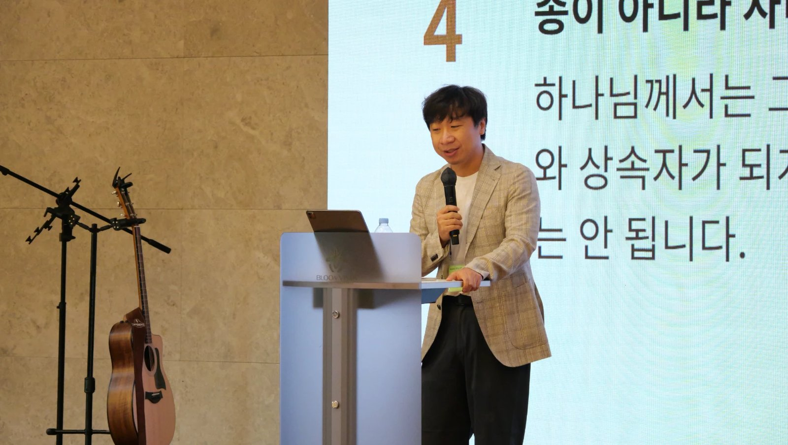

46회 CMF 학사수련회 개회예배(목 17:00) · 장현준 대표간사 · 한국누가회 · 본문 갈6:14 · 설교 제목 「나의 자랑, 나의 기쁨」(설교 슬라이드 12장 기준)

SECTION 01
개요·핵심 논지
copy
학사수련회의 청중은 삶의 계절이 제각각이다 — 학생, 이제 막 학교를 떠난 사람, 일터와 가정에서 오래 산 사람, 진로와 결혼을 고민하는 사람, 은퇴 이후를 생각하는 사람. 강사는 이 다양한 청중을 하나의 질문 앞에 세우며 사흘을 연다. "나는 무엇으로 나를 설명하고 있는가. 나는 무엇을 붙들며 살아가고 있는가."
무엇을 자랑하는지를 보면 그 사람이 무엇으로 사는지 알 수 있다.
바울은 같은 질문을 "나는 무엇을 자랑하는가"로 묻는다. 여기서 자랑은 과시가 아니다 — 내가 가장 소중히 여기고, 의지하고, 그것으로 안심하고, 그것으로 존재의 가치를 확인하는 것이다. 그래서 자랑하는 것이 흔들리면 사람은 불안해지고, 자랑하는 것을 잃으면 자신까지 잃었다고 느낀다. 무엇을 자랑하는지를 보면 그 사람이 무엇으로 사는지 알 수 있다.
이 질문에 대한 바울의 답이 본문이다 — "내게는 우리 주 예수 그리스도의 십자가 외에는 결코 자랑할 것이 없다"(갈 6:14). 혈통·교육·종교적 열심·사도로서의 성취·고난의 이력, 자랑할 것이 많았던 사람이 삶의 마지막 근거를 그 어느 것에도 두지 않았다. 설교는 이 한 절을 갈라디아서 전체의 압축으로 읽어낸 뒤, 그것이 오늘의 비교·서열의 질서에 대해 죽는 일이며, 일상의 신비와 감사를 회복하는 길임을 보인다.
SECTION 02
구조·전개
copy
| 단계 | 소재 | 도달점 |
|---|---|---|
| 여는 물음 | 삶의 계절이 다른 청중 | 나는 무엇으로 나를 설명하는가 = 무엇을 자랑하는가 |
| 본문의 자리 | 갈라디아서 1~6장 개관 | 6:14은 갈라디아서 전체 복음의 결론이자 절정 |
| 십자가의 역설 | 로마 세계에서 십자가 = 수치·패배·저주의 형틀 | 실패처럼 보이는 자리에서 하나님의 사랑과 구원이 완성됐다 |
| 갈2:20과의 연결 | "내가 그리스도와 함께 십자가에 못박혔나니" (회중 통독) | 옛사람의 지배가 끝났다는 선언 · 십자가는 교리가 아니라 인격적 사랑의 사건 |
| 새 창조 | 운영 체제(OS) 비유 | 복음은 낡은 자아의 보수·업데이트가 아니라 새 창조 |
| 세상에 대해 죽는다 | 세상이 던지는 질문들(통장·주소·지위·경건 경쟁) | 십자가가 그 질문의 판결권을 끝낸다 |
| 일상의 신비 | 일곱 살 막내 서연 | 세월은 저절로 성숙시키지 않는다 — 관성을 멈추는 것은 은혜 |
| 회복의 길 | 사랑 — 익숙한 존재를 다시 보게 하는 눈 | 십자가는 그 사랑의 가장 깊은 계시 |
| 죽음 앞의 질문 | 폴 칼라니티 『숨결이 바람이 될 때』 | 성취는 나를 설명할 수는 있어도 구원하지 못한다 |
| 최선의 재정의 | 이규리 시 「특별한 일」의 도마뱀 (회중 통독) | 최선은 반듯한 모습으로만 오지 않는다 — 잃으면서 지켜내는 최선 |
| 그리스도의 최선 | 빌2:6-8 케노시스 | 예수는 버려도 되는 일부가 아니라 자기 전부를 내어 주셨다 |
| 닫는 말 | 베르디 인용 | "완벽은 늘 나를 빗나갔다. 그래서 나는 늘 한 번 더 시도할 의무가 있었다" |
★ KEY INSIGHT
핵심 개념·주장 ↔ 근거
copy
SECTION 04
갈 6:14 = 갈라디아서 전체의 압축
copy
갈라디아 교회에는 "그리스도의 십자가만으로는 충분하지 않다"는 목소리 — 율법과 할례의 요구 — 가 커지고 있었고, 바울이 볼 때 그것은 다른 복음이었다. 강사는 1장부터 6장까지를 회중과 함께 훑는다: 사람에게서 받지 않은 복음(1장) → 믿음으로 의롭게 됨, 그리스도와 함께 십자가에 못박힘(2장) → 저주를 대신 받으신 속량(3장) → 종에서 자녀·상속자로(4장) → 자유, 성령을 따라 사랑으로 섬김(5장) → 서로의 짐을 지는 삶(6장). 그리고 6:14 안에 이 여섯 장의 주제 — 십자가·칭의·속량·자녀 됨·자유·새 창조 — 가 전부 녹아 있음을 보인다. 편지를 마치며 바울은 새 논리를 보태지 않고, 말해 온 복음의 중심을 한 번 더 붙든다.
큰 흐름은 둘이다. 1~4장: 구원은 성취의 획득이 아니라 선물 같은 은혜 — 그리스도인은 이력과 공로를 들고 서는 사람이 아니라 빈손으로 그리스도를 붙드는 사람이다. 5~6장: 그 은혜는 사람을 무책임하게 만들지 않는다 — 은혜로 시작하여 사랑으로 열매 맺고, 십자가에서 시작하여 새 창조의 삶으로 이어진다.
설교 슬라이드는 이 압축을 자체 표제로 정리한다 — "한 절 안에 모인 갈라디아서의 복음: 칭의 · 그리스도와의 연합 · 속량 · 자유 · 새 창조"(슬라이드 6).
★ KEY INSIGHT
2:20 — 십자가는 교리가 아니라 사랑의 사건
copy
"내가 그리스도와 함께 십자가에 못박혔다"는 바울의 인격과 개성이 사라졌다는 뜻이 아니다. 율법의 행위로 자신을 의롭게 만들고, 공로로 가치를 증명하고, 사람들의 인정으로 존재를 유지하려던 옛사람의 지배가 끝났다는 선언이다. 바울에게 십자가는 차가운 교리나 추상적 구원 공식이 아니라 "나를 사랑하사 나를 위하여 자기 자신을 내어 주신" 인격적 사랑의 사건이었다. 그러므로 믿음으로 산다는 것은 교리를 머리로 인정하는 것이 아니라, 날마다 자신을 증명하려는 삶을 내려놓는 것이다.
2:20이 "이제 내 안에 누가 사시는가"라는 개인적 고백이라면, 6:14은 "그러므로 나는 무엇을 자랑하며 어떤 세계에 속하여 사는가"라는 최종 선언이다.
SECTION 06
새 창조 — 보수가 아니라 창조
copy
복음은 우리를 조금 더 괜찮은 사람으로 보수하는 일이 아닙니다. 낡은 자아에 종교적인 장식을 더하는 일도 아닙니다.
강사는 이를 현대어로 옮긴다 — 내 삶을 업데이트하시는 것이 아니라, 이 세상이라는 운영 체제가 삭제되고 예수 그리스도라는 운영 체제가 새로 시작되는 일이다. 중요한 것은 종교적 표지·소속 집단·남보다 철저한 행위가 아니라 "십자가와 부활 안에서 새로 지으심을 받았는가"다(갈 6:15의 논리).
SECTION 07
세상에 대해 죽는다 — 판결권의 종결
copy
바울이 못박혔다고 말한 "세상"은 하나님이 지으신 창조 세계나 우리가 섬길 세상이 아니라, 하나님 없이 사람의 가치를 정하고 비교하고 줄 세우는 옛 질서다 — 본문의 맥락에서는 로마의 지배 구조. 강사는 그 질서가 던지는 질문을 오늘의 언어로 나열한다. 너는 무엇을 가졌느냐, 통장에는 어떤 숫자가 찍혀 있느냐, 주소는 어디냐, 얼마나 성공했느냐 — 그리고 때로는 교회 안에서마저 "너는 다른 사람보다 얼마나 더 경건한가". 갈라디아 교회에는 이 질문이 할례와 율법의 형태로 들어왔고, 오늘의 신앙 공동체에는 학력·직함·소득·자녀의 성취·심지어 사역의 열매와 신앙의 열심으로 가장하여 들어온다.
십자가는 그 질문의 판결권을 끝낸다.
십자가는 그 질문의 판결권을 끝낸다. 세상의 평가는 더 이상 나의 최종 판결이 아니고, 나의 실패가 나를 규정하지 못하며, 나의 성과는 감사할 일일 뿐 나를 구원하지 못한다. 그리고 역설이 이어진다 — 세상에 대해 죽어야만 세상을 참으로 사랑하고 섬길 수 있다. 세상에서 자기 가치를 빼앗아 오지 않아도 되기 때문에, 비로소 자신을 내어 줄 자유가 생긴다. 사람을 이용하지 않아도 되고, 성공을 신으로 섬기지 않고도 맡은 일을 성실히 할 수 있으며, 타인을 경쟁자가 아니라 함께 짐을 질 이웃으로 볼 수 있다.
SECTION 08
익숙함의 관성과 사랑의 눈
copy
일곱 살 막내 서연이는 쓰레기봉투를 들고 함께 걷는 것만으로 고함을 지르며 좋아한다. 강사는 묻는다 — "내가 크다고 생각했던 문제들은 정말 큰 걸까. 작다고 생각했던 것들은 정말 작은 걸까." 나이가 들수록 모든 것이 익숙해지고, 처음에는 놀랍고 감사했던 일이 당연해진다. 감사할 이유가 사라진 것이 아니라 시선이 익숙함에 굳은 것이다. 그리고 자기 한계를 정직하게 인정한다.
세월이 저절로 우리를 성숙하게 만드는 것은 아닌 것 같습니다. 제가 아는 가장 신실하고 성숙한 분은 서른이 되셨던 예수님이시기 때문입니다.
시간이 지날수록 우리는 살아온 대로 사는 관성을 갖게 되는데, 그리스도의 은혜가 그 관성에 등 떠밀린 우리를 멈추어 세운다. 회복의 길로 강사가 제시하는 것이 사랑이다 — 두근거림이 아니라, 그리스도께서 우리를 대하셨던 방식으로서의 사랑. 사랑은 익숙한 존재를 다시 보게 만들고, 스쳐 지나던 얼굴을 다시 바라보게 하고, 당연하게 여겼던 수고를 발견하게 하고, 함께 있다는 사실을 선물로 여기게 한다. 십자가는 바로 그 사랑의 가장 깊은 계시다. 같은 논리로, CMF가 있다는 것도 당연한 일이 아니라 은혜이며, 그 은혜를 누리기 위해 서로의 짐을 사랑으로 져야 하는 공동체다.
SECTION 09
칼라니티 — 성취는 설명할 수 있어도 구원하지 못한다
copy
신경외과 의사 폴 칼라니티(『숨결이 바람이 될 때』)는 삶과 죽음의 경계에서 일하다가 한순간에 말기암 환자가 됐다. 암 진단은 그의 성취를 무가치하게 만들지는 않았지만, 그것이 인생의 최종 답이 아님을 드러냈다 — 좋은 이력, 탁월한 실력, 사람들의 인정, 미래의 가능성이 죽음 앞에서 가벼워졌고 그를 구원할 수 없었다. 남은 시간에 그는 수술실로 돌아갔고, 딸을 맞이했고, 글을 남겼다. 강사가 이 책에서 읽은 답: 삶을 가치 있게 만드는 것은 죽음을 이기는 성취가 아니라, 죽음을 아는 존재로서도 끝까지 사랑하고 책임지며 자신을 내어 주는 삶이다.
의료인 청중에게 이 질문은 직접적이다 — 직함을 잃고 건강이 흔들리고 계획하던 미래가 닫힐 때 남는 것은 무엇인가. 그리고 바울은 칼라니티의 대답에서 한 걸음 더 들어간다. 십자가는 "의미 있게 살아야 한다"는 교훈이 아니라, 우리가 의미를 만들기도 전에 하나님이 먼저 우리를 사랑하셨다는 사건이다. 우리가 죽음을 마주하기 전에 그리스도께서 먼저 죽음에 들어가셨고, 부활하셔서 죽음이 우리 삶의 마지막 문장이 아님을 말씀하셨다.
SECTION 10
도마뱀의 최선, 그리스도의 최선
copy
마지막 권면에서 강사는 "최선을 다하라"는 말을 꺼내기를 주저한다 — 여기 모인 모두가 이미 각자의 최선으로 살아왔음을 알기 때문에, 힘내라는 말이 위로가 아니라 짐이 될 수 있음을 먼저 인정한다. 그 위에서 이규리의 시 「특별한 일」을 회중과 함께 읽는다. 꼬리를 잘라 주고 도망치는 도마뱀 — 최선은 언제나 반듯하고 아름다운 모습으로 오지 않고, 때로는 자신의 일부를 잃으면서 남은 삶을 지켜내는 일이다. 몸통은 알지도 못하는 최선을 다한 꼬리가 되었던 시절이 청중에게도 있었을 것이다.
그럼에도 최선을 포기하지 않는 이유는 하나님이 먼저 이러한 최선으로 우리를 사랑하셨기 때문이다. 빌2의 케노시스가 근거다 — 다만 예수님은 버려도 되는 일부처럼 희생하신 것이 아니라 온전히 자기 자신을 내어 주셨다. 인간의 최선이 지닌 아픔보다 더 깊고 견고한 사랑이다. (시 출전: 이규리, 『최선은 그런 것이에요』, 문학동네시인선 054)
십자가를 자랑하는 사람의 삶 = 사랑에 최선을 다하는 삶.
설교 슬라이드는 이 적용 전체를 한 문장으로 요약한다(슬라이드 9) — "십자가를 자랑하는 사람의 삶 = 사랑에 최선을 다하는 삶." 제목 「나의 자랑, 나의 기쁨」의 두 단어가 여기서 만난다: 자랑(갈 6:14)이 기쁨이 되는 길이 사랑이다.
SECTION 11
실천 적용
copy
- 수련회를 위한 구체적 제안 — 오래 보아 익숙해진 사람들의 이야기를 다시 듣고, 누군가 혼자 지고 있는 짐이 무엇인지 살피고, 고마움을 말하고, 미루어 둔 용서를 시작하는 2박 3일.
- 자기 점검의 질문 — 나는 지금 무엇을 자랑하는가. 내 작은 성취들을 높이 흔들 것인가, 나를 위해 죽기까지 사랑하신 그분을 자랑할 것인가. 그리고 그분이 사랑하신 사람과 공동체를 사랑할 것인가.
- 닫는 축복 — "이 자리에 모인 모든 주님의 딸과 아들들에게 30대 예수님의 심장이 여전히 살아서 박동하시기를." 완벽할 수 없기에, 남녀노소를 막론하고 한 번 더 주님 앞으로 나아간다(베르디: "완벽은 늘 나를 빗나갔다. 그래서 나는 늘 한 번 더 시도할 의무가 있었다").
- 설교 후 침묵 기도 — 말씀에서 남은 문장이나 단어를 기도 제목으로.
SECTION 12
종합
copy
개회예배로서 이 설교의 설계는 정확하다. 계절이 다른 청중 전체에 통하는 단 하나의 질문(무엇을 자랑하는가)을 세우고, 그 질문으로 사흘 전체의 판을 깐다. 십자가 외에 자랑할 것이 없다는 답은 다음 세션들과 맞물린다 — 같은 날 저녁 말씀 1(말씀1 고난을받는특권)은 십자가만 자랑하는 사람에게 고난이 특권이 됨을 말하고, 셋째 날 전체특강(2)는 "무엇에 동의해서 남아 있는가"를 묻는다. 자랑 → 특권 → 가치로, 수련회 전체가 한 질문의 세 겹이 된다.
한 달 전 학생수련회 EBS 집회(EBS7 대체불가능한사람 함께우는눈물)와 견주어 보면 설교자의 일관된 문법이 보인다 — 정직한 자기 한계 고백을 먼저 놓고 권면을 그 위에 세우는 순서, 자녀 이야기로 신학을 여는 방식(94회 둘째 서율의 레고, 이번 막내 서연의 산책), 그리고 성취·비교의 질서에 대한 진단. 학생에게는 "사랑이 사람을 대체 불가능하게 만든다"로, 학사에게는 "자랑하는 것이 흔들리면 나도 흔들린다"로 — 같은 복음이 청중의 계절에 맞게 번역되어 있다.
함께 더 생각할 지점
- "세상"의 두 용법. 강사 스스로 죽음의 대상인 세상(가치를 정하고 줄 세우는 질서)과 섬김의 대상인 세상(창조 세계·이웃)을 구분했다. 이 구분이 흐려지면 "세상에 대해 죽는다"가 세상으로부터의 도피로 오독되기 쉬우니, 적용에서 이 경계를 붙들고 읽으면 좋다.
- 자랑의 심리학과 복음. "자랑하는 것이 흔들리면 불안해진다"는 정의는 정체성 심리학의 통찰과 닿아 있다. 십자가가 판결권을 끝낸다는 명제를 자기 확증의 다른 형태(나는 십자가를 자랑하는 사람이라는 우월감)로 뒤집지 않는 훈련이 함께 필요하다.
- 갈라디아서 장별 개관의 압축. 여섯 장을 한 설교 안에 훑는 개관은 6:14의 무게를 세우는 데 효과적이나, 각 장의 요약(특히 3장 속량·4장 자녀 됨)은 설교적 압축이다. 본문을 직접 따라 읽는 후속 묵상과 함께 갈 때 힘이 온전해진다.
- 칼라니티 독법. 『숨결이 바람이 될 때』를 "복음의 한 걸음 전"으로 놓는 읽기는 의료인 청중에게 특히 설득력 있다. 다만 저자 자신도 기독교 신앙의 언어를 갖고 있었다는 점까지 읽으면 대비가 더 정교해진다.
- 인용 전거의 투명성 — 설교자 스스로 밝혀 두었다. 슬라이드 각주에 따르면 칼라니티 화면 문장("사랑하고 사랑받았기 때문에 삶은 가치 있으며…")은 책의 직접 인용이 아니라 설교자의 독서 요약이고, 베르디의 문장은 피터 드러커가 베르디의 말로 소개한 영어 문장의 설교용 번역·의역(베르디의 서신 원문으로 확인된 인용은 아님)이다. 인용을 재사용할 때 이 층위를 유지할 것.
교차 참조
- 46회 CMF학사수련회 — 수련회 허브.
- 말씀1 고난을받는특권 — 같은 날 저녁. 자랑의 재정의가 특권의 재정의로 이어진다.
- 갈6 · 갈2 — 6:14과 2:20의 연결.
- 십자가 — 판결권의 종결이라는 이 설교 고유의 각도.
- 장현준 — 94회 학생수련회 EBS 저녁집회 4회와의 문법적 연속성.
원본
📖 원본: 수련회 생중계 전사 + 설교 슬라이드 「나의 자랑, 나의 기쁨」 12장.